Stream Configuration
Following sections describe how to configure Padas to run streaming tasks in order to transform events and/or apply a set of filtering rules to generate alerts. Please refer to Introduction before moving forward in order to understand engine processing concepts.

All of the configuration views (Topologies, Pipelines, Tasks, Rules) provide the ability to bulk upload or download configurations in JSON format.
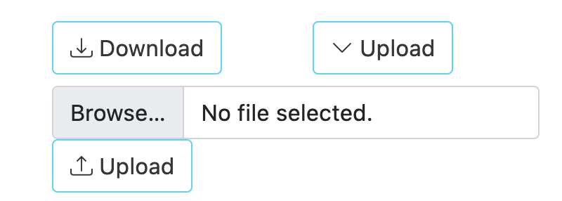
Topologies
A topology is simply a group of one or more ordered pipelines where it reads from a single input topic and writes to one or more output topic(s). Both input and output topic(s) are mandatory requirements for a topology that Padas engine runs. A topology consists of one or more ordered pipelines where an output from one pipeline becomes an input for the next pipeline definition.
It's possible to define any number of topologies per Padas Engine, where each topology starts a different processing task within one or more threads. For more detailed architectural description on Kafka streams processor topology please refer to Confluent Documentation.
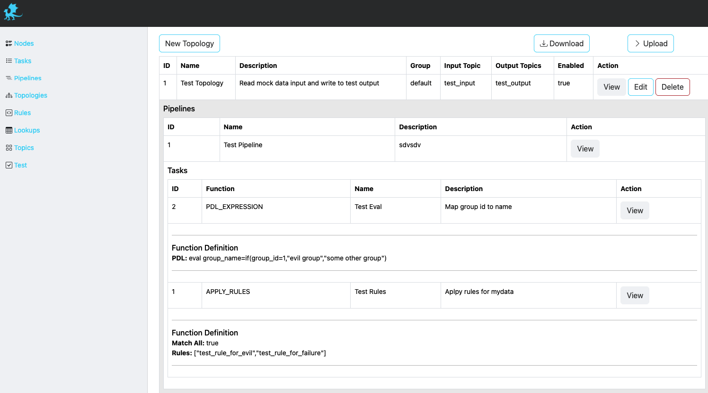
Description of fields can be found below.
| Field | Description |
|---|---|
| ID | Unique identifier. This ID is also used as a key when updating/deleting the entry. |
| Name | A descriptive name. |
| Description | Detailed description of topology functionality. |
| Group | Consumer group associated with this topology. |
| Input | Input topic to consume and apply configured pipeline(s). |
| Output | One or more output topics to send transformed data to. |
| Enabled | Set to true when enabled, false otherwise. |
| Pipelines | An ordered list of Pipelines to execute when streaming data from specified Input. When multiple Pipelines are specified, output from a Pipeline becomes an input for the next Pipeline. |
Pipelines
A pipeline consists of one or more ordered tasks where an output from one task becomes an input for the next task definition. A pipeline is a logical grouping of tasks for specific goals. For example, in terms of processing tasks, a single pipeline with 12 different tasks is the same as having 3 consecutive pipelines with 4 different tasks each.
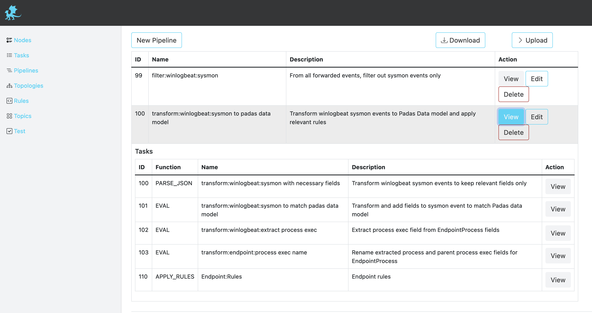
Description of fields can be found below.
| Field | Description |
|---|---|
| ID | Unique identifier. This ID is also used as a key when updating/deleting the entry. |
| Name | A descriptive name. |
| Description | Detailed description of the pipeline functionality. |
| Tasks | An ordered list of Tasks to execute. When multiple Tasks are specified, output from a Task becomes an input for the next Task. |
Tasks
A task is the single unit of work performed on event data. Each task has the following built-in functions that can perform processing on an event:
APPLY_RULES: Apply predefined rules (per event and/or correlated/aggregated) to streaming events. The input must beJSON.EXTRACT: Extract any event input with provided Regular Expression defition (named groups). The output isJSON.FILTER: Filter an event (keep or drop) based on PDL or regex definition. For PDL, the input must beJSON.OUTPUT_FIELD: Outputs the value of a given field. The input must beJSONand the output isStringrepresentation of the selected field value.PARSE_CSV: Parse inputCSVevent intoJSON.PARSE_KV: Parse input key-value pairs event intoJSON.PDL_EXPRESSION: Allows event data transformation and enrichment via PDL expressions. The input must beJSON.TIMESTAMP: Define a field from within the event data (JSONformatted) to use as the timestamp.
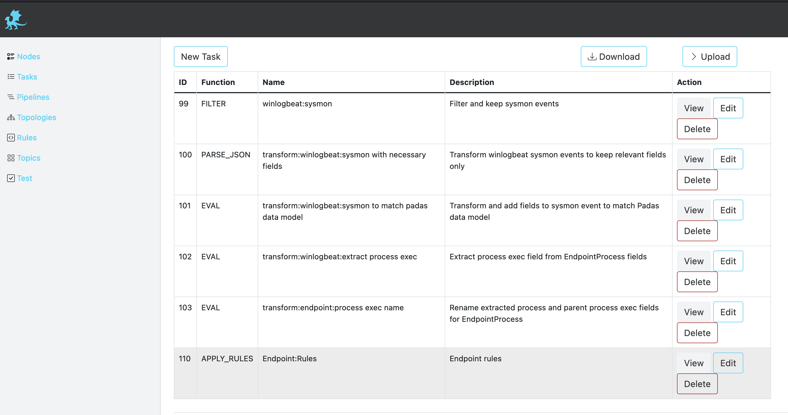
Description of fields can be found below.
| Field | Description |
|---|---|
| ID | Unique identifier. This ID is also used as a key when updating/deleting the entry. |
| Name | A descriptive name. |
| Description | Detailed description of the task functionality. |
| Function | One of the built-in functions for this task. |
| Definition | Function definition. Each function has different definition parameters. Please see below for details. |
APPY_RULES Definition
This function applies pre-defined rules (PDL queries) in order to generate event alerts that match them. The output is enriched with padas_rules object array that contains matching rule information as well as the event data.
| Field | Description | Example |
|---|---|---|
| ID | ID the of the pre-defined rule. | 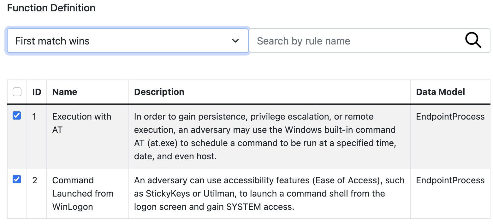 |
| Name | Name the of the pre-defined rule. | |
| Description | Description the of the pre-defined rule. | |
| Rules | List of selected rules to process when this task is running. | |
| Match All | If set to Match all rules, all rules for this task are evaluated. If set to First match wins, first match wins and evaluation stops. |
|
EXTRACT Definition
This function allows usage of named capturing groups in regular expression to extract fields from event data. The output is in JSON formatted event with named groups as fields.
| Field | Description | Example |
|---|---|---|
| Regex | Named group capturing Regular Expression to match the event. Captured named groups will be JSON field names. | 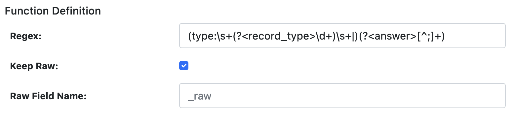 |
| Keep Raw | Boolean to keep raw data in a separate field. If set to true a field name should be provided. |
|
| Raw Field Name | If raw data is to be kept, this will be the field to store it in. _raw is the default. |
|
FILTER Definition
This function allows filtering (keep or drop) an event if it matches the specified regular expression (regex) or PDL query (pdl). Event is not transformed and kept the same.
| Field | Description | Example |
|---|---|---|
| Type | Must be pdl or regex. Defines the type of filgering. |
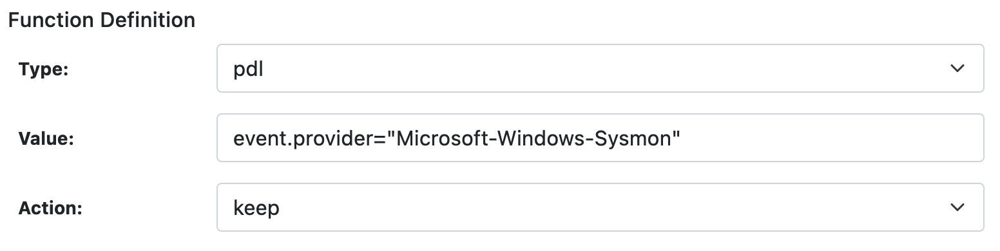 |
| Value | Depending on the Type, this must be a PDL query or a Regular Expression to match the event. | |
| Action | When the query/regex matches, this action processed on the event. Must be keep or drop. |
|
OUTPUT_FIELD Definition
This function outputs the value of a given field. The output is String representation of the field value.
| Field | Description | Example |
|---|---|---|
| Field | Field name from the event data. | |
PARSE_CSV Definition
This function allows parsing CSV formatted data with any delimiter. The output is JSON formatted event with specified field names.
| Field | Description | Example |
|---|---|---|
| Field Names | Comma separated list of field names for the CSV data. | 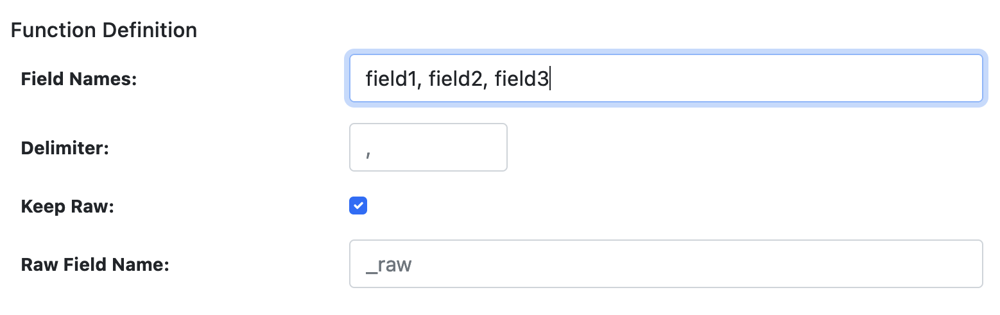 |
| Delimiter | Field separator for the CSV items. Default is comma ,. |
|
| Keep Raw | Boolean to keep raw data in a separate field. If set to true a field name should be provided. |
|
| Raw Field Name | If raw data is to be kept, this will be the field to store it in. _raw is the default. |
|
PARSE_KV Definition
This function allows parsing key-value pairs within event data with any delimiter. Left side of the delimiter becomes the field name and right side becomes the field value. The output is JSON formatted event.
| Field | Description | Example |
|---|---|---|
| Delimiter | Field separator for the Key-Value items. Default is comma =. |
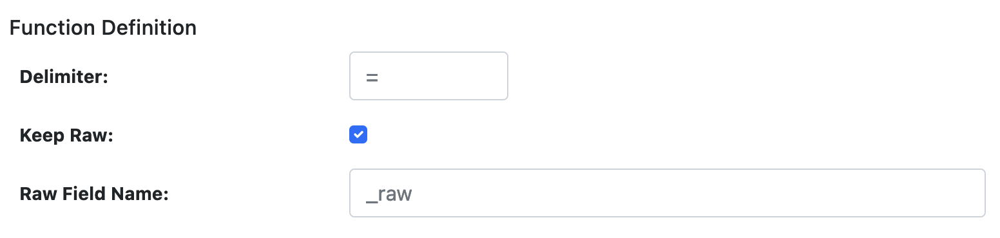 |
| Keep Raw | Boolean to keep raw data in a separate field. If set to true a field name should be provided. |
|
| Raw Field Name | If raw data is to be kept, this will be the field to store it in. _raw is the default. |
|
PDL_EXPRESSION Definition
This function allows data transformation and enrichment via PDL expressions. Input must be JSON since fields and conditions require this in order to process event data.
| Field | Description | Example |
|---|---|---|
| pdl | PDL expression can contain one or more query, eval, fields, rename, flatten expression to perform necessary transformation(s) per event data. Also, PDL expression uses lookups to enrich your event data. Please see PDL Expression for syntax and usage. |
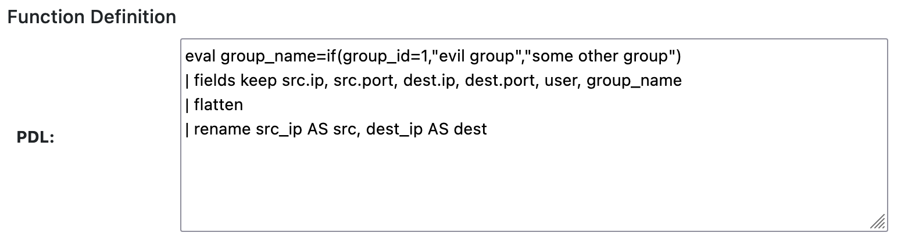 |
TIMESTAMP Definition
This function extracts event timestamp from the given field with the provided format. The output is time in milliseconds in a new field (if specified). The timestamp information is utilized by stream processing.
| Field | Description | Example |
|---|---|---|
| Field | JSON data field name that holds the timestamp value to be parsed. | 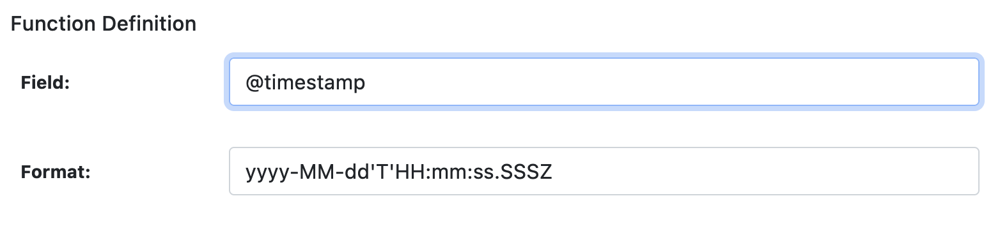 |
| Format | Pattern to extract field data timestamp information based on Java SE Patterns for Formatting and Parsing. Default pattern is yyyy-MM-dd'T'HH:mm:ss.SSSZ. |
|
| Add New Field | Boolean to add a new field for extracted timestamp, represented in milliseconds. Default is true. |
|
| Time Field Name | Field name to add if the above is set to true. Default is _time. |
|
Rules
A rule is a PDL Expression or Correlation that performs query matching and/or aggregations on input events. A rule can have additional annotations (e.g. MITRE ATT&CK Technique IDs) for further processing by other analytics systems. We've also created a tool for security practitioners to convert existing Sigma Rules to PDL (see padas-tools repo for details).
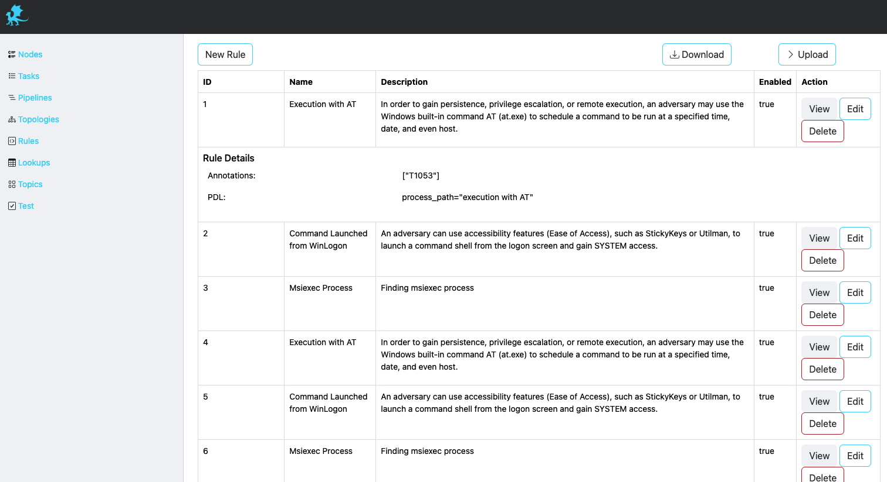
Description of fields can be found below.
| Field | Description |
|---|---|
| ID | Unique identifier. This ID is also used as a key when updating/deleting the entry. |
| Name | A descriptive name. |
| Description | Detailed description of the rule functionality. |
| PDL | PDL query to match the streaming data. Please refer to PDL Reference for details. Sample rules can also be found as PadasRules_sample.json |
| Annotations | List of applicable annotations for this rule. For example, a common usage would be adding MITRE ATT&CK Technique IDs. |
| Enabled | Set to true when enabled, false otherwise. |
Lookups
Lookups enrich your event data by incorporating field-value combinations from lookup tables. Padas uses lookups to compare field-value combinations in your event data with those in external lookup tables. If Padas finds matching field-value combinations in the lookup table, it appends the corresponding field-value combinations from the table to the events in your PDL search results. This process enhances the data and provides you with additional context and insights for analysis.
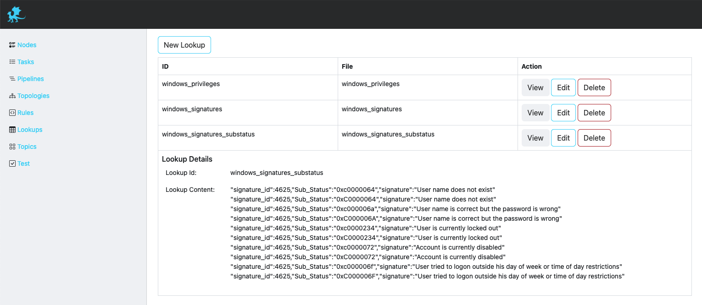
Description of fields can be found below.
| Field | Description |
|---|---|
| ID | Unique identifier. This ID is also used as a key when updating/deleting the lookups. |
| File | A file name of the uploaded lookup. |
Test View and Examples
Test view allows a simple interface to play with sample data and verify configurations.
Description of fields and state details can be found below.
| Field | Description |
|---|---|
| Test Function | Functionality to test, can be a Task, Pipeline or Rule. |
| Tasks/Pipelines/Rules | Based on the above choice, this selection lists available/configured options. |
| Event Data | Copy/paste your sample event data here. |
| Result | Output will be displayed under this section. |
Rule
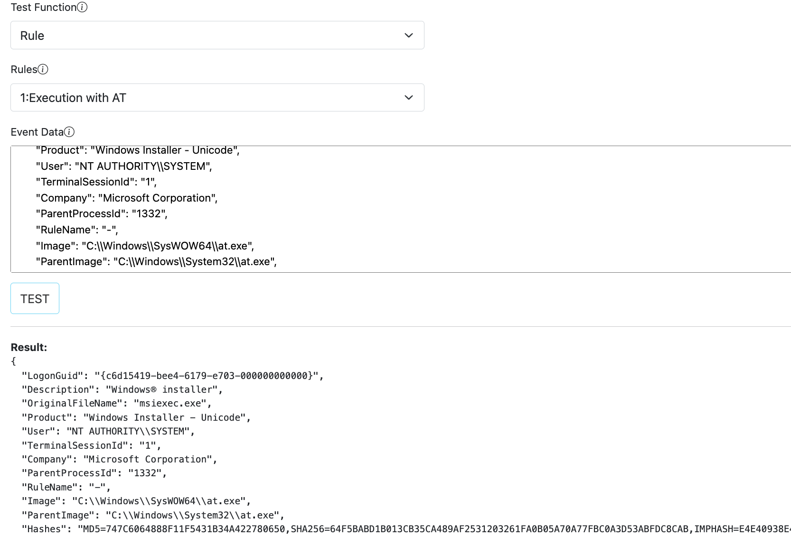
Task
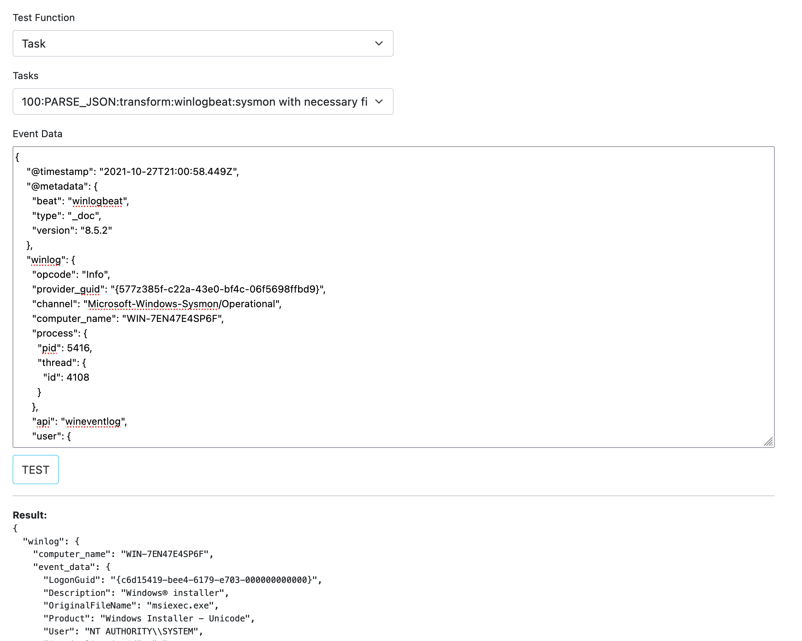
Since PADAS is a data streaming platform, it will be enough to enter a single line like in the image when testing PARSE_CSV fuction.
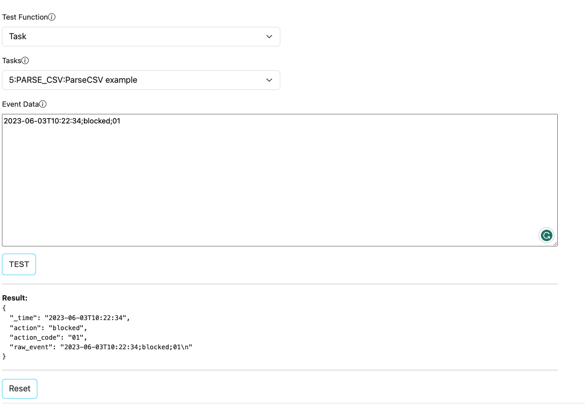
Pipeline
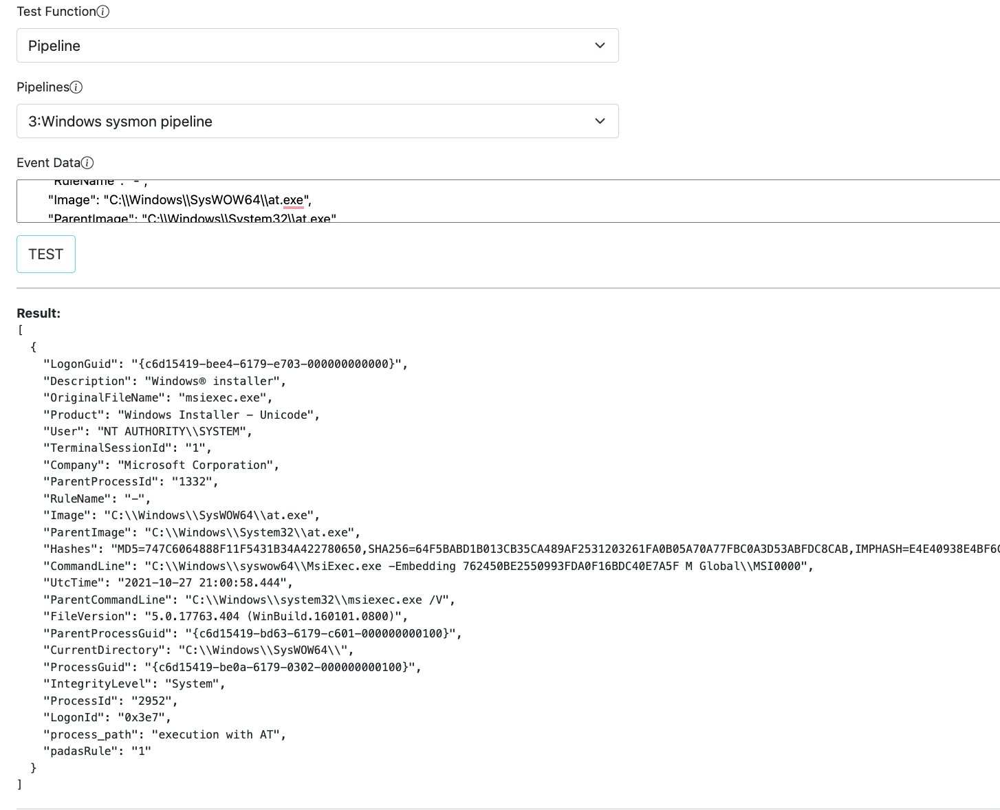
PDL
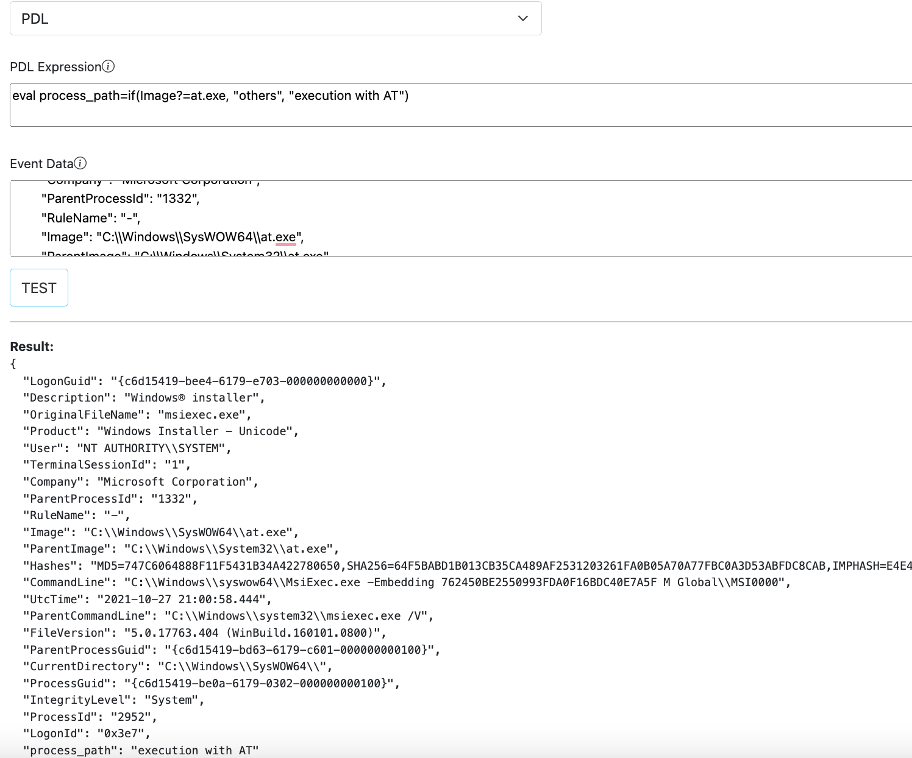